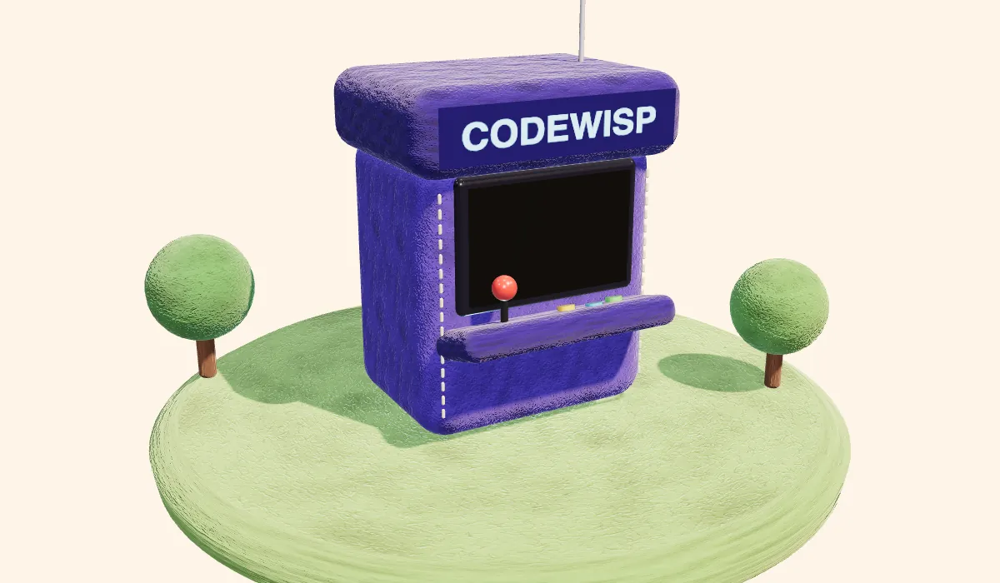

CodeWisp, AI game generation
CodeWisp turns a prompt into a playable game. I built the generation pipeline behind it as a chain of agentic stages, with model routing, evals and cost controls, working directly with the founder.
The pipeline
Generation runs as sequential agentic stages: routing, research, build, art, audio, quality gate and publish. Each stage has one job, so failures are easy to find and retry.
What I built
- The end-to-end generation pipeline, architected as the seven stages above.
- Multi-model routing across Claude Opus, Sonnet and Haiku, matching model tier to task complexity and keeping each run under a fixed $6 cost cap.
- "Judge", an LLM-as-judge eval stage that checks sprite consistency, level passability, win states and mechanics, iterates on failures and logs findings to improve the system prompts.
- AI code generation constrained to a Lua sandbox, to cut hallucinated code.
- A deterministic 2D/3D runtime at 60 fps with hash-based verification and per-game engine versioning, so stale games regenerate automatically after migrations.
- A studio editor with asset management, material shaders and cutscenes, plus a usage credit limiter.
Petlings content engine
I also built the organic content engine for Petlings, the company's iOS game: a seeded battle simulator and code-driven video templates (HyperFrames, GSAP, ffmpeg). It produced 19 short-form videos in a week, and the reusable episode templates turn new content around in minutes.
How I worked
Directly with the founder, in twice-weekly product calls: scope a feature, demo the build, turn the feedback into the next iteration.